With both sides already through to the knockouts regardless of the result, Stale Solbakken rotated heavily for Norway - resting both Haaland and Odegaard - while France went close to full strength chasing top spot. Dembele made the decision for them, scoring three times inside the first half-hour to complete the second-fastest hat-trick in tournament history. Aasgaard's response briefly threatened a Norwegian comeback, and a missed Strand Larsen penalty proved a costly turning point before Doue added a late fourth.
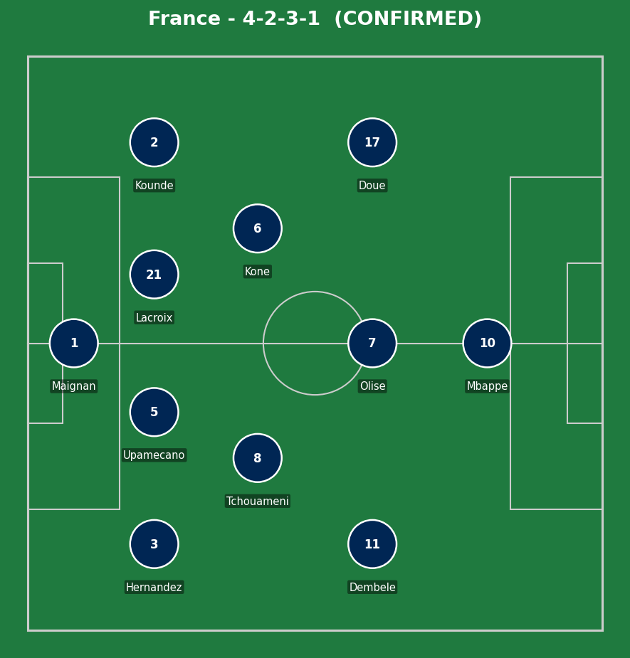
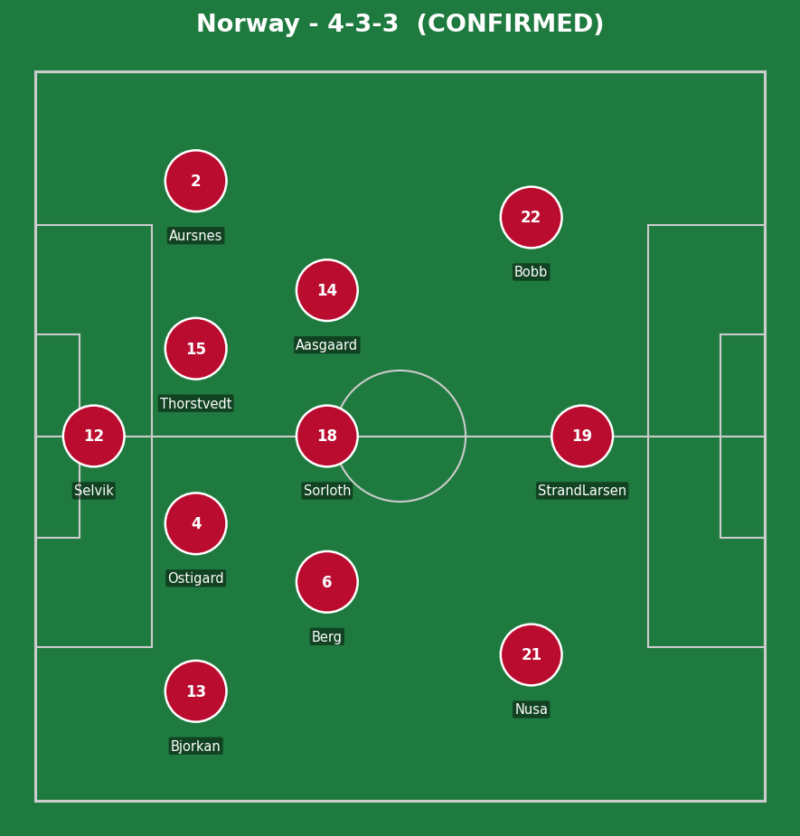
France (4-2-3-1): Maignan; Kounde, Upamecano, Lacroix, T. Hernandez; Kone, Tchouameni; Dembele, Olise, Doue; Mbappe. Norway (4-3-3, much-changed): Selvik; Aursnes, Ostigard, Thorstvedt, Bjorkan; Berg, Sorloth, Aasgaard; Nusa, Strand Larsen, Bobb.
With nothing material at stake beyond group seeding, this had the feel of a dress rehearsal rather than a genuine title-race decider - Norway's heavy rotation (resting their two biggest stars) signaled they were prioritizing freshness over a result they didn't strictly need. France took the opposite approach, fielding close to full strength to secure top spot and the easier-looking knockout path that comes with it.
Dembele's evening was built on exactly the kind of sharp, direct movement that's defined his recent club form - all three goals came from different types of service, showing a player completely in rhythm rather than relying on one specific pattern. Norway's much-changed side competed admirably in patches, but the gulf in continuity and personnel quality told over 90 minutes.
The key moment was Norway's missed second-half penalty. At 1-3, a successful conversion would have made the closing stages genuinely tense; instead, Maignan's save effectively ended any realistic hope of a comeback.
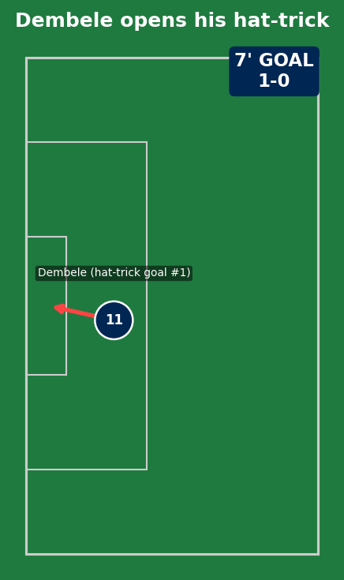
A sharp, clinical finish to set the tone early - exactly the kind of confident start that put Norway's rotated side on the back foot from the opening minutes.
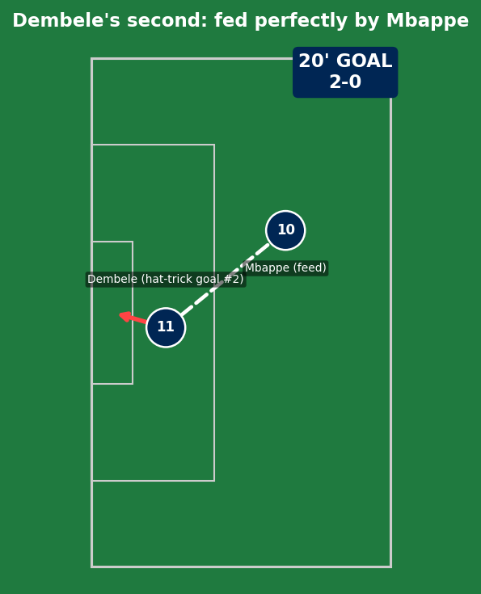
Mbappe's feed was the assist, but Dembele's movement to get in behind and finish cleanly was the real quality - two goals, two different types of service, showing genuine versatility in how he was finding the net.
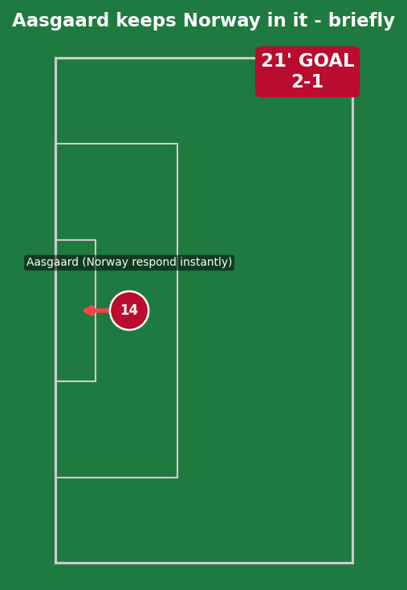
A swift response that briefly suggested Norway's much-changed side wouldn't simply roll over - real credit to Aasgaard for finding a way through just a minute after France had doubled their lead.
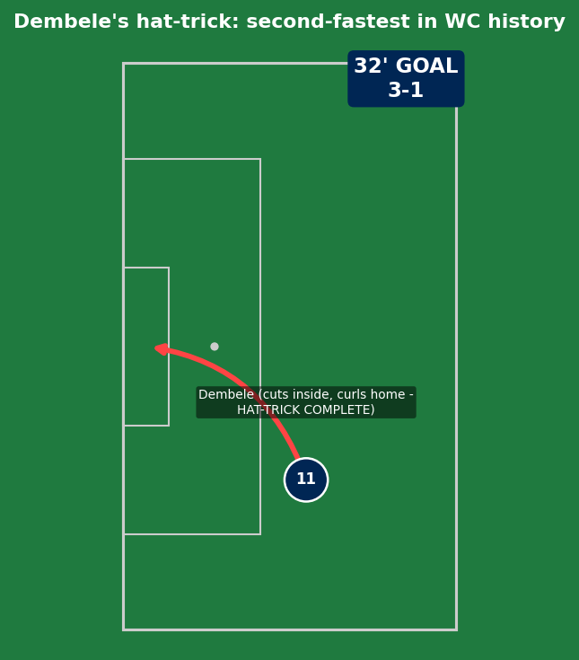
Cutting inside from the right and curling home left-footed - a genuinely special finish that completed the second-fastest hat-trick in World Cup history and earned a perfect Sofascore rating of 10. Four goals now at this tournament, firmly inserting himself into the Golden Boot conversation alongside Messi, Mbappe, and Haaland.
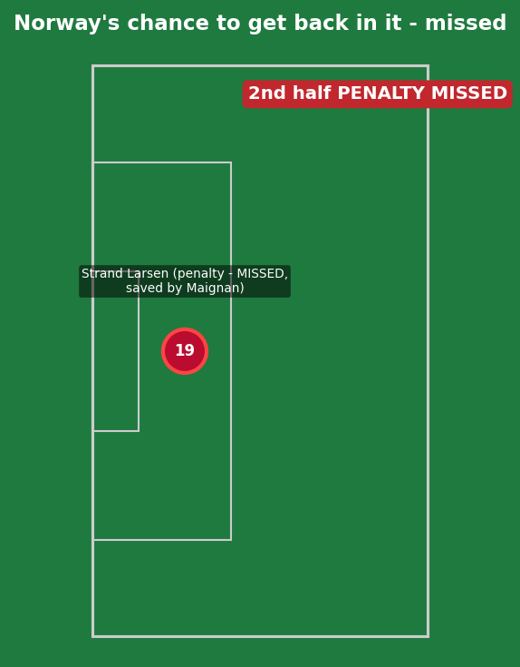
Norway won a clear penalty in the second half, but Jorgen Strand Larsen completely fluffed his lines - Maignan made a simple, comfortable save. Worth noting honestly: a converted penalty here would have made for a far tenser finish, and the missed opportunity is the clearest individual error of the match.
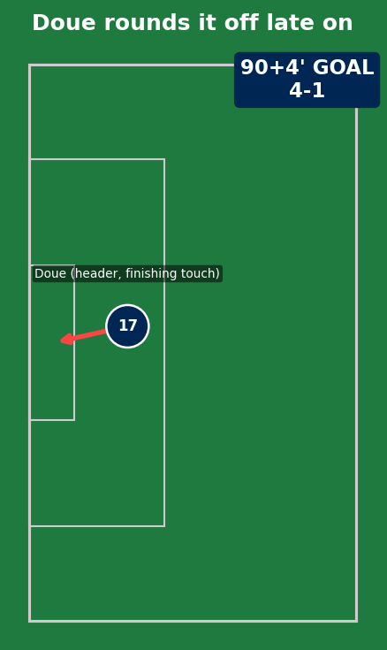
A composed finishing touch right at the death, rounding off a dominant French performance and ensuring they finish the group stage with a perfect record for just the second time in their history.
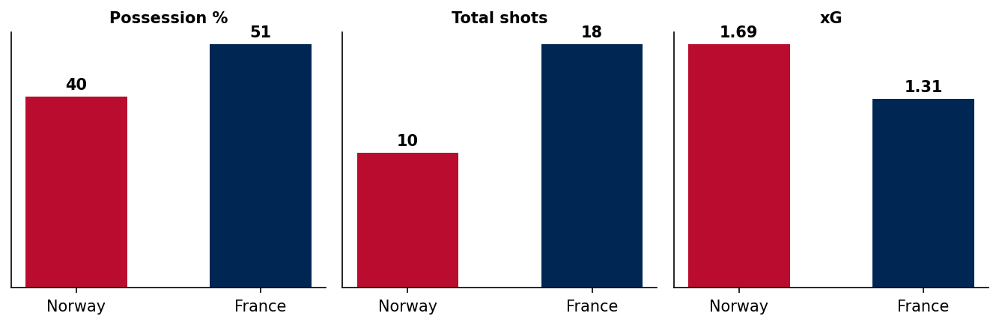
Interestingly, France's actual xG (1.31) was lower than Norway's (1.69) largely because of the missed penalty - a reminder that underlying numbers don't always tell the full story of a match's flow.
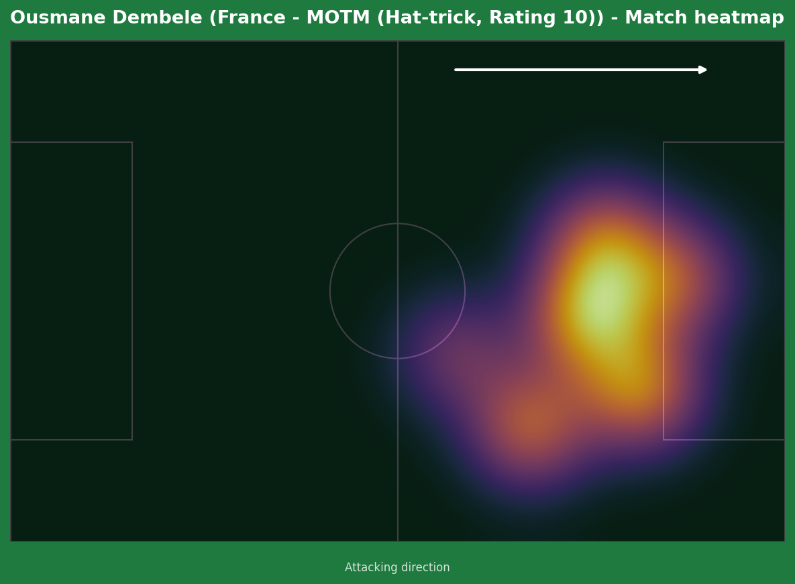
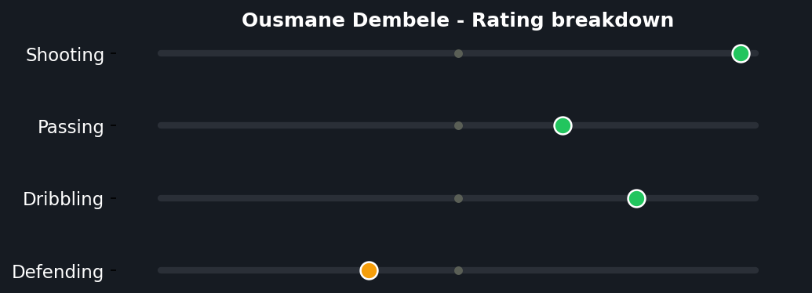
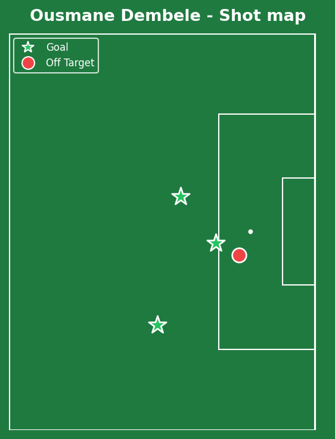
A perfect 10.0 Sofascore rating is about as rare as it gets, and entirely deserved here - three goals of genuinely varied profiles (a sharp early finish, a clinical second off a Mbappe assist, and a stunning curled effort to complete the set) inside the first half-hour. With the hyped Haaland-Mbappe billing fizzling into a non-event due to rotation, Dembele simply took the spotlight for himself and made this his night entirely.
Illustrative reconstruction based on known event locations, not raw GPS tracking data.
Dembele - 10.0 ⭐ MOTM (hat-trick)
Mbappe - 7.0 (assist, didn't need to do much more)
Doue - 6.5 (late goal)
Maignan - 7.0 (penalty save)
Aasgaard - 6.5 (sharp response goal)
Strand Larsen - 4.5 (missed penalty)
Selvik - 5.0 (four conceded)
Berg - 5.5 (competed honestly)
Both sides progress to the Round of 32. France finish top of Group I; Norway finish second but remain unbeaten across their first two matches.
💬 Reactions & Comments